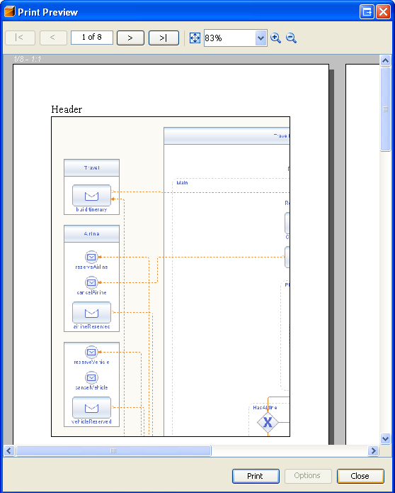
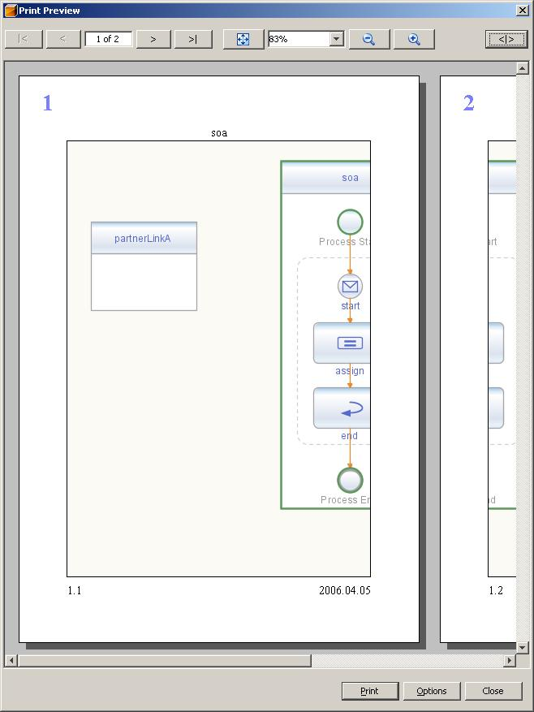
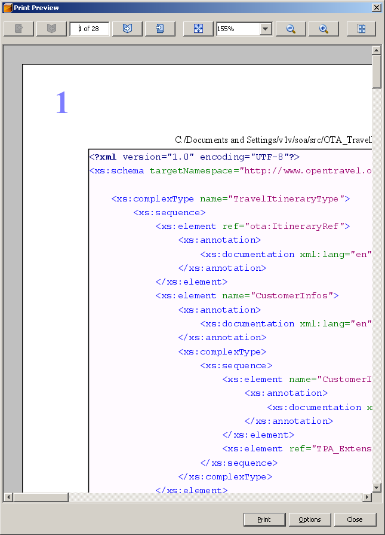
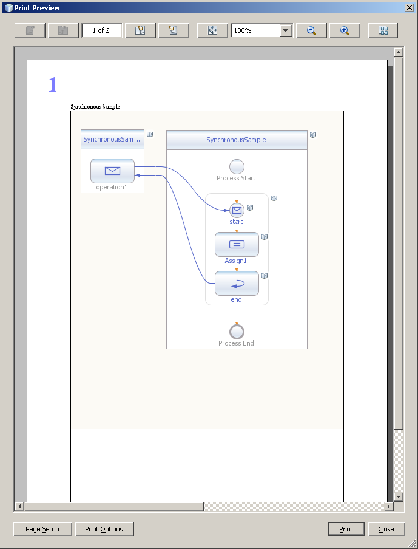
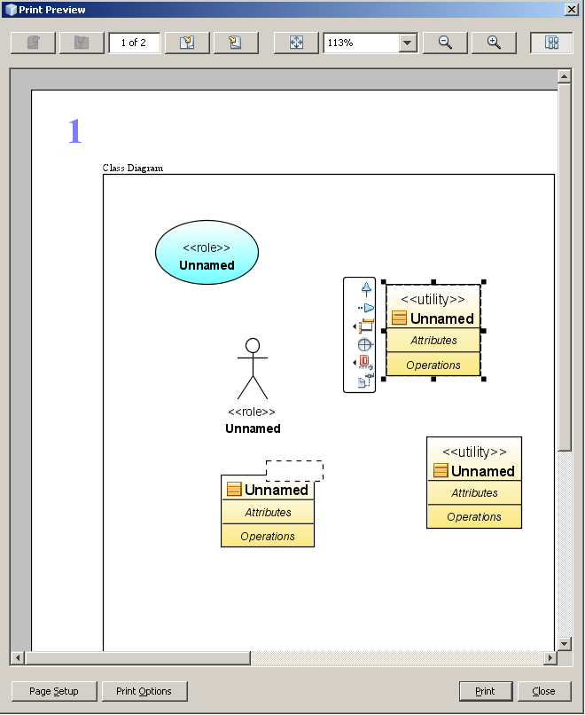
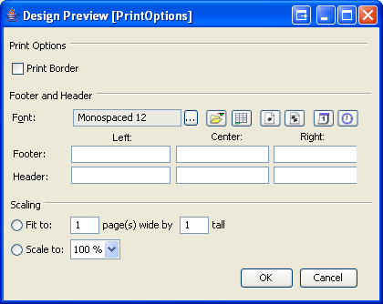
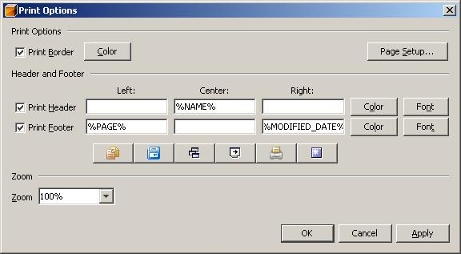
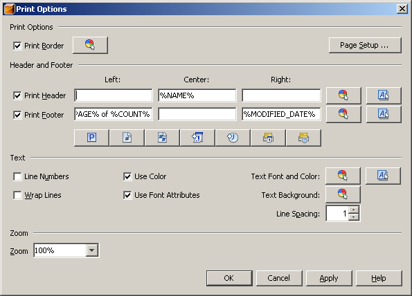
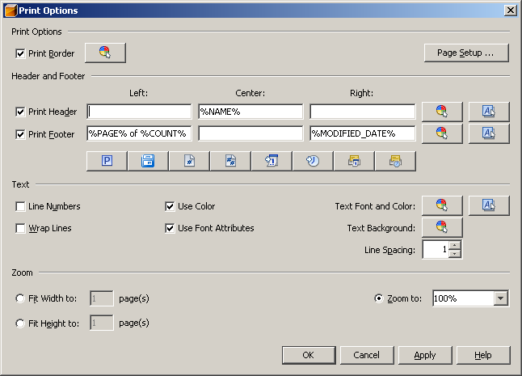
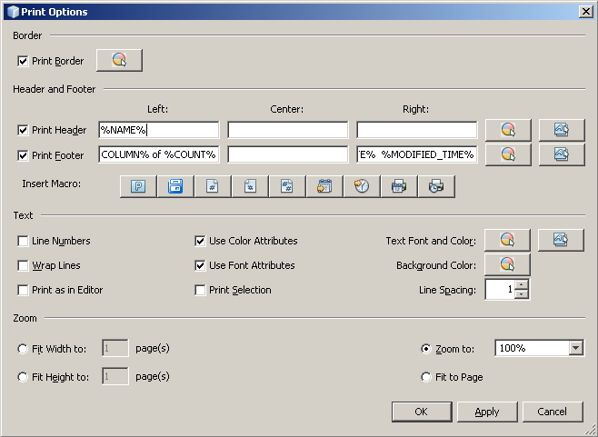

Print Functional Specification
Revision: 1.7
Date: 2008/03/06 14:34:15
1. Introduction
Orchestration Designer will support both Process Diagram and BPEL source
file printing. Wherever printing conventions are already in place within
the NetBeans IDE, the Orchestration Designer will follow those
conventions. The Orchestration Designer will also add some particular
user interfaces to address particular issues that apply to diagram
printing and are not covered by existing NetBeans conventions or user
interfaces.
2. Use Cases and Scenarios
UC1: User wants to print the business process diagram
Scenario:
- Diagram is print "target" which means any of the following is true:
- Process node in project explorer is selected (or Process
navigator view has focus) and Process Design editor is shown
- Process Design editor is opened and has focus
- User invokes the “File : Print” action
UC2: User wants to preview the business process diagram printout
Scenario:
- Diagram is print "target" which means any of the following is true:
- Process node in project explorer is selected (or Process navigator
view has focus) and Process Design editor is shown
- Process Design editor is opened and has focus
- User invokes the “File : Print Preview” action
UC3: User wants to print the BPEL source code
Scenario:
- BPEL source is print "target" which means the following is true:
- Process node in project explorer is selected (or Process navigator
view has focus) and Process Design editor isn't shown
- User invokes the “File : Print” action
UC4: User wants to preview the BPEL source code printout
Scenario:
- BPEL source is print “target” which means any of the following is true:
- Process node in project explorer is selected (or Process
navigator view has focus) and Process Design editor isn't shown
- User invokes the “File : Print Preview” action
UC5: User wants to print the BPEL source code to HTML
Scenario:
- BPEL source is print "target" which means the following is true:
- Process node in project explorer is selected (or Process
navigator view has focus
- User invokes the “File : Print to HTML” action
3. Specification
File Menu Actions
File
New Project... Ctrl+Shift+N
...
-----------------
Page Setup... // Standard Page Setup dialog
Print... Ctrl+Alt+Shift+P // Print Preview dialog
Print to HTML... // Printing sources to HTML
-----------------
Exit
Print to HTML, Print Preview actions are contextual to
a selected node in the Projects View (if it has focus) or active view
in the multiview editor if editor or any other view has focus. In
general, some of the actions may not be implemented for all the views
and in that case they are disabled. Currently, Print to HTML is only
enabled for Source and Print Preview is only enabled for Design
View.
Print Preview Window
Print Preview is a modal resizable window.





Figure - Print Preview Window
Note: This is just a mockup; actual icons on the
buttons are defined in the following sections and the
insets should correspond to the guidelines.
Components:
Print Options Dialog
In the Print Options dialog the user can set various attributes
for printing. These are persisted between different invocations of
the dialog as well as starts of the IDE.






Figure - Print Options Dialog
- Print Border checkbox - If selected, the border will be printed
- Choose Font button - brings up the standard NetBeans font chooser
Tooltip: Choose Font
- Choose Color button - brings up the standard NetBeans color chooser
Tooltip: Choose Color
- Pattern buttons - a set of buttons used to construct a footer
or header pattern. When clicked a pattern is inserted to the focused footer
or header text field. The buttons are disabled if the focus is not in any
of the pattern text fields.
- Header and Footer Pattern text fields - contain patterns
for footer and header in left, central or right areas
- Fit to and Zoom to radio buttons
By default (when the IDE starts for the first time), this setting
is set to Zoom to 100%.
- Fit to text fields and Zoom to combobox
- The values of these three components are linked together.
As the user types in a number or selects a value from the combobox
the respective values in the remaining components are recomputed to
match that value. E.g. changing the scale from 100% to 200% will
double the values in the fit to text fields.
- When the dialog is opened the values are also precomputed based
on the current selection of the radio buttons and corresponding value.
- As the user types in a value or select an element, corresponding
radio button is selected.
- The items in the scale to combobox are 150%, 125%, 100%, 75%, 50%, 25%.
4. Hints
- Press Ctrl (or press right mouse button) and scroll mouse wheel:
preview scale will be changed.
- Double click with left mouse button on Preview dialog: preview
scale will be “Fit to Window”.
- Double click with right mouse button on Preview dialog: all pages
are fitted in window.
- In Scale text field on Preview dialog press '+': preview scale will be increased.
- In Scale text field on Preview dialog press '-': preview scale will be decreased.
- In Scale text field on Preview dialog press '*' or '/': preview
scale will be “Fit to Window”.
- Press Ctrl+Alt+Shift+P: Print Preview dialog appears.
- Double click on Preview dialog fits first page to window,
double click again: it fits all pages to window.
- Button <|> shows one/all pages.
- Print Preview works not for diagram only but for bpel sources too.